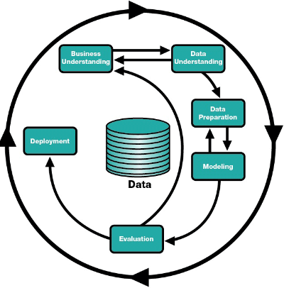

Teórica 02
Aprendizagem Automática (Machine Learning) vs Ciência de Dados (Data Science)
Machine Learning
- Utiliza dados;
- Tem como produto final um artefacto de software;
- Quem trabalha em ML são Data Engineer.
Data Science
- Analisa conjuntos de dados;
- Tem como produto final apresentações e relatórios;
- Quem trabalha em DS são Data Scientists.
Aprendizagem
- Ganhar capacidades e conhecimentos;
- Criar uma linha de raciocínio para resolver problemas;
- Memorizar;
- Reconhecer erros;
- Corrigir erros;
- Imitar comportamentos.
Aprendizagem Automática
Capacidade de aprender de modo autónomo e independente.
Os algoritmos de machine learning são algoritmos orientados aos dados.
Aprendizagem Simbólica vs Aprendizagem Não Simbólica
Aprendizagem Simbólica
- É capaz de explicar as suas decisões;
- Não é capaz de dar resposta a alguns problemas, pois as regras e o conhecimento têm de ser codificados à mão;
- Está muito presa ao mundo académico e aos laboratórios universitários.
- Exemplos: Baseado em Casos, Árvores de Decisão, etc...
Aprendizagem Não Simbólica
- Não é capaz de explicar as suas decisões;
- Apresenta melhores resultados que a AS;
- É, em geral, menos aceitável em decisões de alto risco.
- Exemplos: Redes Neuronais Artificiais, Algoritmos Genéticos e Evolucionários, etc...
Aprendizagem Supervisionada
- Aprende com dados para os quais já sabe a resposta correta;
- A grande maioria dos algoritmos de ML utiliza este tipo de aprendizagem;
- Normalmente, são divididos em 2 categorias:
- Classificação: Apresenta os resultados em classes;
- Regressão: Apresenta resultados em forma contínua.
Aprendizagem Não Supervisionada
- Aprende com dados para os quais não se sabe a resposta certa;
- Tem como objetivo modelar a estrutura ou a distribuição dos dados do problema.
- Divide-se em 3 categorias:
- Segmentação (clustering): Organização dos dados em grupos coerentes;
- Redução (reduction): Reduzir o número de características ou decompor o conjunto de dados em múltiplos componentes;
- Associação: Procura regras que associem o comportamento demonstrado pelos dados.
Aprendizagem por Reforço
- Utilizam técnicas de auto-alimentação de sinais com a noção de recompensa/penalização;
- Tem capacidade crítica sobre os próprios resultados produzidos pelo algoritmo;
- 2 categorias:
- Q-Learning: Assume que se está a seguir uma política ótima e utiliza-a para atualização dos valores das ações;
- SARSA: Considera a política de controlo que está a ser seguida e atualiza o valor das ações.
Metodologias
Existem duas grandes metodologias:
- CRISP-DM;
- SEMMA.
Motivos para utilizar
- Permite que os projetos sejam replicados;
- Apoia no planeamento e gestão do projeto;
- Incentiva as melhores práticas e ajuda a obter os melhores resultados.
SEMMA
Dividido em diversas etapas que funcionam de forma circular:
- Sample: Recolhe uma parte representativa dos dados;
- Explore: Exploração e análise de dados;
- Modify: Engenharia e transformação de features;
- Model: Conceção do modelo;
- Assess: Avaliação do modelo.
CRISP-DM
